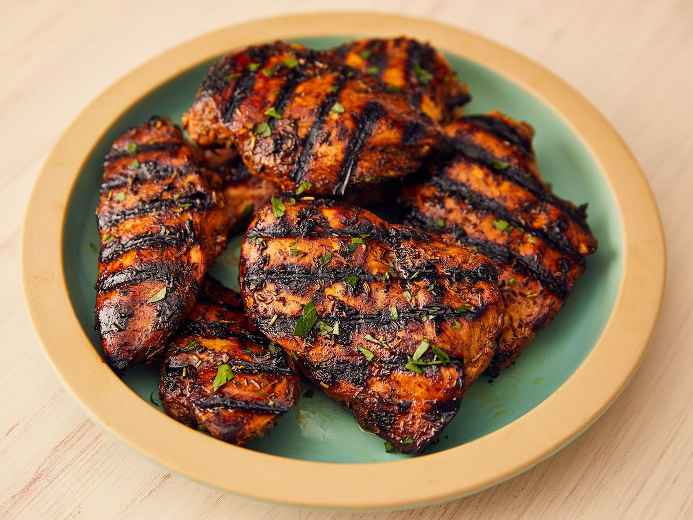

Grill Chicken

Description:Grilled Chicken is a very popular recipe made with chicken, hung curd and spices like cumin powder and black pepper
Ingridents
- 350 gm chicken
- 1/2 teaspoon ginger paste
- 1/2 teaspoon red chilli powder
- 1/4 teaspoon cumin powder
- salt as required
- 2 teaspoon virgin olive oil
- 1/2 cup hung curd
- 1/2 teaspoon garlic paste
- 1/4 teaspoon coriander powder
- 1/4 teaspoon powdered black pepper
- 1 teaspoon garam masala powder
Steps
- Preparing and Seasoning the Chicken
- Pound boneless chicken breasts flat until they are about ¾ inches (1.91 centimeters) thick
- Consider butterflying a whole chicken to cut down on cooking time
- Consider marinating chicken breasts in the fridge for 4 to 12 hours
- Consider using a rub on chicken legs and thighs
- Consider brining the chicken for 2 to 3 hours in ¼ cup (25 grams) salt and 4 cups (950 milliliters) water
Grilling the chicken
- Make sure that the grill is clean
- Start up the grill
- Oil the grill by wiping it down with an oily brush or paper towel
- Place the chicken on the grill and replace the grill cover
- Consider searing bone-in chicken pieces if you are using a two-zone fire
- Grill the chicken, covered, until it is done
- Consider adding a glaze or barbeque sauce in the last 10 minutes of grilling